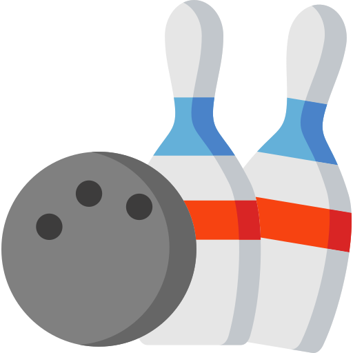

Колекција на носии од кореографијата „ Драчевка “
0
0
Оваа мемориска игра е дел од завршниот проект по предметот Java Script. Истата има едукативен карактер и ќе ја наменам за промоција на културното наследство со кое располага Националната Установа „Танец“. Во овој сегмент ќе прикажам дел од македонските народни носии од Горновардарската етнографска целина кои се имплементирани во кореографиите на Н.У. „ Танец “. Како прилог на галеријата на носии која е прикажана во оваа игра, ќе биде овозможено и слушање на музика од истата етнографска целина.
Одлично одигра! Во прилог ги имате информациите за кореографијата „ Драчевка “.
Кореографска обработка од Атанас Коларовски, музика од Трајко Прокопиев
Оваа кореографија е дел од ората од Северно играорно подрачје а е инспирирано од Скопскиот регион, Скопска Блатија и Скопска Црна гора и се
изведува во носии од истиот крај. Во орото покрај динамичноста се
претставени останати драмски елементи како веселбата и радоста на средселскиот собор од овој крај.